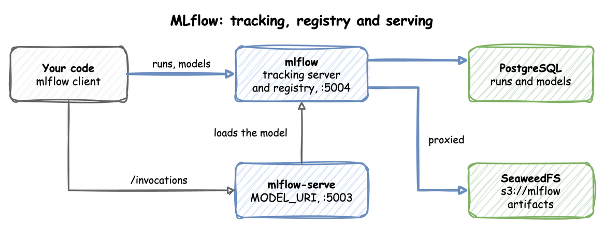
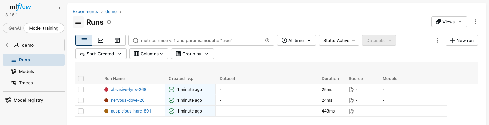
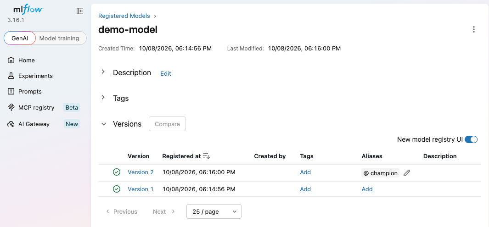

MLflow Tracking and Model Serving
The mlflow profile runs two containers. mlflow is the tracking server and model registry, with runs on PostgreSQL and artifacts on SeaweedFS under s3://mlflow. mlflow-serve scores a registered model over HTTP. The end-to-end tests run the commands below on every release.
This guide builds on Getting Started. Its last section reads features from Feast with Iceberg.
Your code logs runs and models to the tracking server, and mlflow-serve loads a registered model from it:

Start the profile:
| docs/snippets/mlflow/commands.sh:up | |
|---|---|
| Endpoint | Address |
|---|---|
| Tracking UI and API from the host | http://127.0.0.1:5004 |
Tracking API inside the odctl network |
http://mlflow:5000 |
| Model server from the host | http://127.0.0.1:5003/invocations |
Model server inside the odctl network |
http://mlflow-serve:5003/invocations |
The server runs MLflow 3.16.1, so install the same client version on the host.
Log a Run with an Artifact
This logs a run with a parameter, a metric and a small file as an artifact, then prints where the artifacts are stored and the run's artifact list:
The code prints the artifact URI and the list ['notes.txt']. The artifact URI starts with mlflow-artifacts:/. The server proxies artifacts, so the client uploads through the tracking server and needs no S3 address or keys. Downloads from your machine need one setting, as Load a Model from Your Machine shows. The run and its artifact appear in the UI.
The runs are listed under the experiment in the Model training view:

Register a Model
This trains a small XGBoost classifier, registers it as demo-model and points the alias champion at the latest version:
The run prints Created version '1' of model 'demo-model'. This needs XGBoost on the host. The model server has XGBoost 3.2, so install the same minor version to log a model it can load.
The registry lists each version, with the champion alias on the latest:

Serve the Model
mlflow-serve starts with the profile and waits idle while MODEL_URI is empty. MODEL_URI is set in .odctl/.env, which odctl init writes. Change its line there to:
| docs/snippets/mlflow/model-uri.env | |
|---|---|
Then replace the containers with odctl recreate mlflow, so mlflow-serve starts with the new value, and score two rows:
| docs/snippets/mlflow/commands.sh:serve | |
|---|---|
The response is {"predictions": [0, 0]}, one prediction per input row. Check the body rather than the status code, because the server answers 200 with an error payload when scoring fails. http://127.0.0.1:5003/ping answers once the model is loaded.
Move the Alias to a New Version
mlflow-serve resolves MODEL_URI once, when its container starts. A new version registered behind an unchanged alias such as champion is not served until you run odctl restart mlflow. Nothing reports an error in the meantime, and the predictions stay those of the old version. To see the change in .env, use a version URI such as models:/demo-model/2 and run odctl recreate mlflow.
Run the code from Register a Model again with min_child_weight=0 added to XGBClassifier. The trees then split, so the new version predicts differently. It registers version 2 and moves champion to it. Then restart the containers and score again:
| docs/snippets/mlflow/commands.sh:new-version | |
|---|---|
The predictions now come from version 2: {"predictions": [0, 1]} instead of [0, 0].
Load a Model from Your Machine
Uploads go through the tracking server, but a download does not by default. The server then hands the client presigned URLs for http://seaweed:8333, a name only containers in the odctl network resolve, so mlflow.artifacts.download_artifacts and a load_model call such as mlflow.sklearn.load_model on your machine wait and print no error. Set MLFLOW_ENABLE_PROXY_MULTIPART_DOWNLOAD to false before the call, and the client downloads through the tracking server instead:
| docs/snippets/mlflow/steps.py:download | |
|---|---|
The output is a listing of the model files that includes MLmodel. mlflow-serve is not affected, because it loads its model inside the odctl network.
Serve a Model That Reads Online Features
The MLflow image has no Feast client. A model can still read online features from feast-serve over HTTP, with an mlflow.pyfunc.PythonModel whose predict method sends the request. This one reads conv_rate of the driver_pushed feature view from Push Features from Flink SQL and scores a driver 1 when it is above 0.5. Run that section first, so the online store holds conv_rate 0.9 for driver 1001, then save the model class as driver_score.py:
Then register it from a file, so that the server loads the class from the code and not from a copy pickled on your machine. Run this in the folder that holds driver_score.py. It gives the model a signature and no input example, because an example would make MLflow call predict on your machine, where feast-serve does not resolve:
The run prints three warnings, about integer columns, type hints on predict and the missing input example, and then Created version '1' of model 'driver-score'; the warnings do not stop the registration.
Serve it as in Serve the Model, with this line in .odctl/.env:
| docs/snippets/mlflow/model-uri-features.env | |
|---|---|
Run odctl recreate mlflow, then score the driver:
| docs/snippets/mlflow/commands.sh:features-score | |
|---|---|
The reply is {"predictions": [1]}. Right after apply, feast-serve may not know the feature view yet (see Push Features from Flink SQL), and the reply is an error; run the command again after a minute. The model costs one HTTP request to feast-serve for each prediction request, and mlflow-serve keeps its 1,500 MB memory limit, which a model with large libraries can reach. The limit is set today by mem_limit in the mlflow-serve service of .odctl/compose-mlops.yml, where an edit can change it.
From Another Container
Inside the odctl network, set the tracking URI to http://mlflow:5000 and score at http://mlflow-serve:5003/invocations. Airflow tasks use these addresses too. Extra Python packages for both MLflow containers go in _MLOPS_PIP_DEPS in .odctl/.env, followed by odctl recreate mlflow. How It Works says when those packages are installed again.
Runnable Example
Save this file as example.sh and run it with bash example.sh in the folder that holds your .odctl workspace, in an environment with mlflow==3.16.1 and XGBoost 3.2 installed. It logs a run, registers demo-model, sets MODEL_URI in .odctl/.env and scores two rows:
It prints the artifact URI, Created version with the new version number, the recreate messages and {"predictions": [0, 0]}. The sed command keeps the old .env as .odctl/.env.bak.